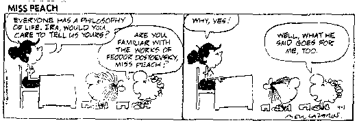

Page index / courses
sch351s00
Schedule of Assignments

| How do I say and spell it? | Home | Requirements |
| Middlebury resources | Books | Web Links |
Feb.
10 Introduction
to the Man and His Work
Feb. 12 The Gambler
Feb. 17 Notes From the Underground
Feb. 19 Notes From the Underground
Feb. 24 Crime and Punishment, I,II
Feb. 26 Crime and Punishment, III
March 2 Crime and Punishment, IV,V
March 4 Crime and Punishment, VI, Epilogue
March 9 Idiot, I
March 11 Idiot, II
March 16 Idiot, III
March 18 Idiot, IV
March 30 Demons I
April 1 Demons II
April 6 Demons III
April 8
April 13 The Adolescent, I
April 15 The Adolescent, II
April 20 The Adolescent, III
April 22
April 27 The Brothers Karamazov, I,
April 29 The Brothers Karamazov, II
May 4 The Brothers Karamazov, III
May 6 The Brothers Karamazov, IV